lorenz_partial_additive_mse_uniform_p30_obsnoise005_chain__ndelays_5_100_sweepProject: Lorenz_INDpartial_NDsweep_D1_NormTrue__JacobianODE
Launched: 2026-05-02T07:35:15Z
Completed: 2026-05-02T18:55:33Z
Outcome: complete_clean
Git: latent-JacobianODE @ 95677e6
Expected runs: 20
lorenz_partial_additive_mse_uniform_p30_obsnoise005_chain__ndelays_5_100_sweepDescription
Lorenz partial additive coupling, uniform reconstruction loss,
obs_noise=0.05, prediction_steps=30, loop_closure_weight=0.
Sweeps delay_embedding_params.n_delays over [5, 10, ..., 100] (20
cells). n_target_dims fixed at 3; encoder.n_input is auto-resolved
from n_delays × |observed_indices| at Hydra runtime.
On reap, the chain dispatches the top-3 n_delays into the existing
splitmode_p30_obsnoise005_top3nd LC × obs_noise grid (108-cell
Stage A, ~54-cell Stage B).
Hypothesis
Bigger n_delays bound (100 vs 50) lets us see whether the optimum plateaus at 50 or keeps improving. At obs_noise=0.05, more delays average out more noise per delay coordinate.
Success criteria
Swept axes (2): data.train_test_params.delay_embedding_params.n_delays, model.encoder.n_input
Chosen run (by best_traj_loss): 9ptb3ina — traj_loss=0.00513, MASE=0.7598, R²=0.9858, LC loss=3.008, epoch=92.0
Swept-axis values at chosen run: data.train_test_params.delay_embedding_params.n_delays=45 · model.encoder.n_input=45
⚠️ 1 run_idx slot(s) had multiple matching wandb runs — the best by best_traj_loss was kept; the others are listed below for audit:
- run_idx=0: chose r63wsasd, dropped bokje8d9
Runs analyzed: 20 (expected 20)
| run_idx | run_id | data.train_test_params.delay_embedding_params.n_delays |
model.encoder.n_input |
best_traj_loss | best_MASE | R² | LC loss | epoch |
|---|---|---|---|---|---|---|---|---|
| 8 | 9ptb3ina |
45 | 45 | 0.00513 | 0.7598 | 0.9858 | 3.008 | 92.0 |
| 16 | n1sgrof7 |
85 | 85 | 0.00535 | 0.7767 | 0.9860 | 31.413 | 98.0 |
| 14 | v62wnqgz |
75 | 75 | 0.00560 | 0.7895 | 0.9849 | 50.205 | 85.0 |
| 7 | k1vjfld7 |
40 | 40 | 0.00562 | 0.7839 | 0.9850 | 1.571 | 91.0 |
| 9 | zw2tstb6 |
50 | 50 | 0.00596 | 0.7975 | 0.9841 | 1.658 | 83.0 |
| 10 | ig461nn4 |
55 | 55 | 0.00623 | 0.8101 | 0.9834 | 3.703 | 90.0 |
| 19 | phvs7piu |
100 | 100 | 0.00627 | 0.8155 | 0.9832 | 14.805 | 83.0 |
| 18 | g5fzzzx6 |
95 | 95 | 0.00642 | 0.8161 | 0.9826 | 28.041 | 76.0 |
| 12 | zqz9kfxd |
65 | 65 | 0.00649 | 0.7925 | 0.9828 | 23.533 | 107.0 |
| 11 | 6mgla6s9 |
60 | 60 | 0.00661 | 0.8202 | 0.9822 | 22.412 | 98.0 |
| 15 | 83ydtyam |
80 | 80 | 0.00670 | 0.8175 | 0.9821 | 43.450 | 82.0 |
| 6 | dtn2of2g |
35 | 35 | 0.00740 | 0.8420 | 0.9806 | 16.896 | 81.0 |
| 4 | 0n8zzm4d |
25 | 25 | 0.00808 | 0.8587 | 0.9786 | 4.055 | 99.0 |
| 3 | bl160pvy |
20 | 20 | 0.01093 | 0.9129 | 0.9702 | 0.689 | 88.0 |
| 2 | w2zoejol |
15 | 15 | 0.02172 | 1.1077 | 0.9428 | 0.450 | 92.0 |
| 1 | s3s1kq5n |
10 | 10 | 0.02297 | 1.3028 | 0.9390 | 0.478 | 108.0 |
| 13 | ss4noj5q |
70 | 70 | 0.03166 | 1.2696 | 0.9164 | 37.780 | 25.0 |
| 0 | r63wsasd |
5 | 5 | 0.07352 | 2.4514 | 0.8062 | 0.445 | 114.0 |
| 5 | 2ess20yo |
30 | 30 | 1.09957 | 11.9960 | -1.9394 | 2.006 | — |
| 17 | reqpr8x8 |
90 | 90 | nan | nan | nan | 16.948 | — |
| Criterion | Verdict | Note |
|---|---|---|
| All 20 cells train without divergence | Unknown | |
| Best traj_loss is monotone-or-curve in n_delays (no random scatter) | Unknown | |
| On reap, controller logs '[chain ...] axis_select OK' and grid instruction lands in instructions/pending/ | Unknown |
Automated verdicts use simple numeric-threshold parsing and may mis-classify qualitative criteria. The Discussion section below takes precedence.
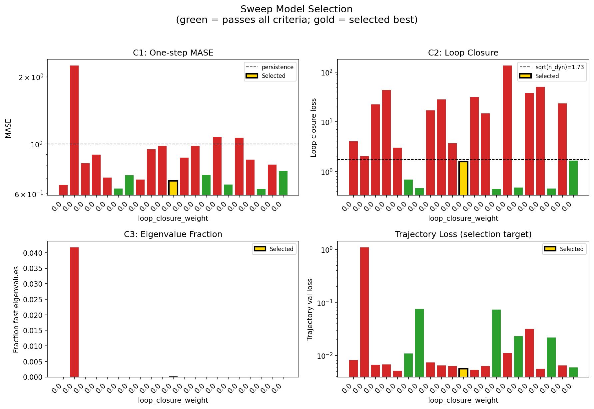
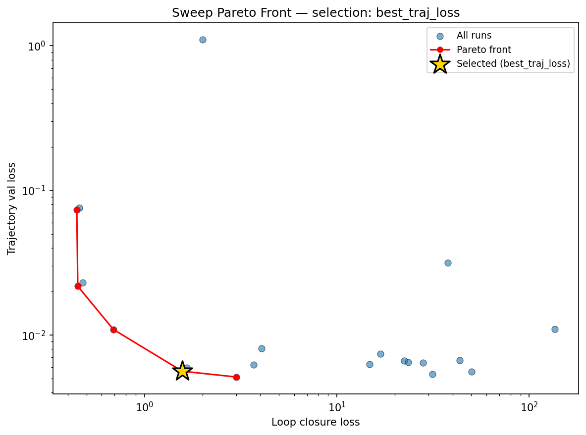
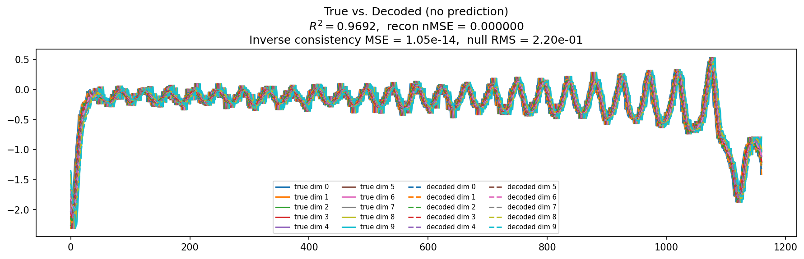
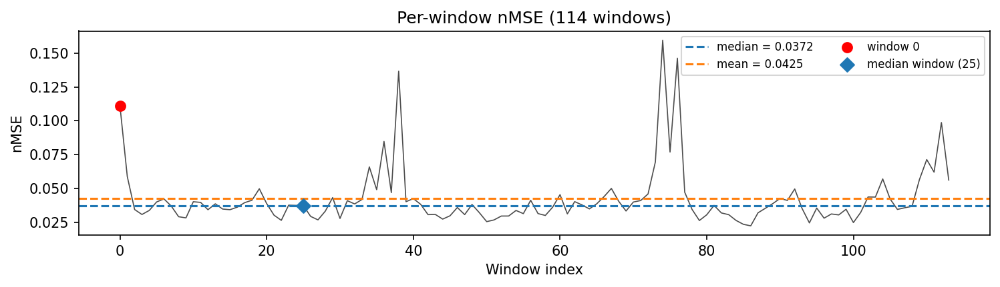
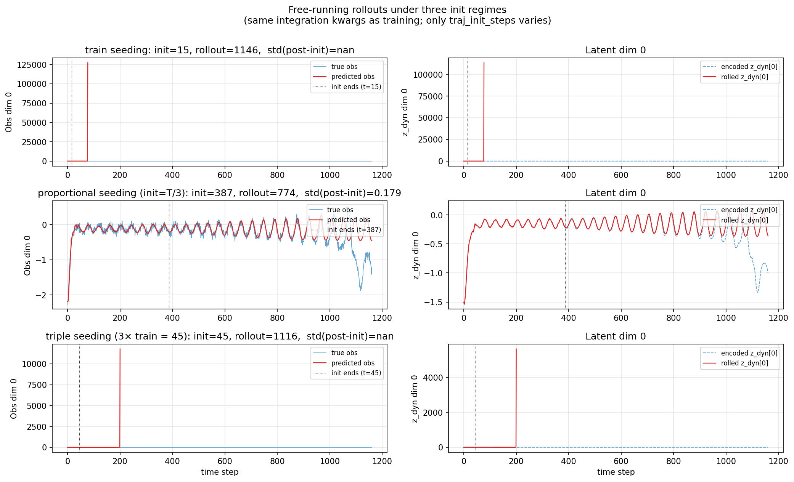
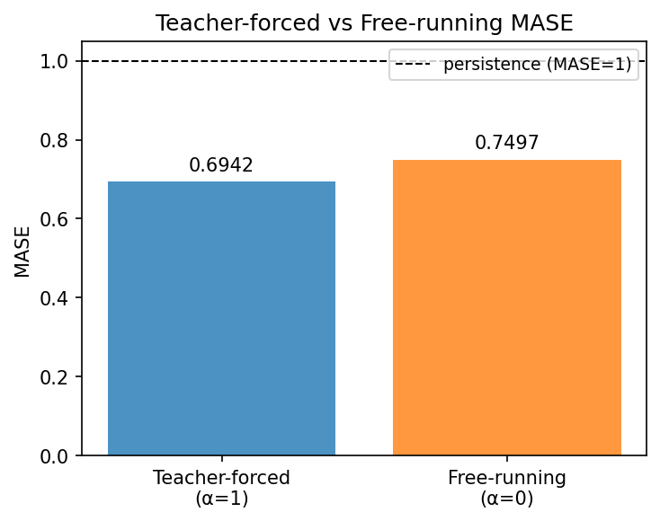
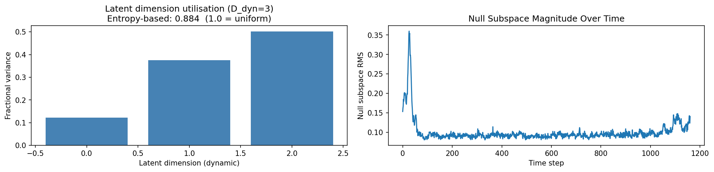
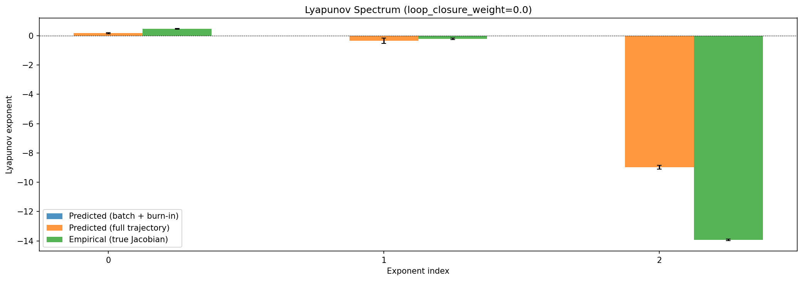
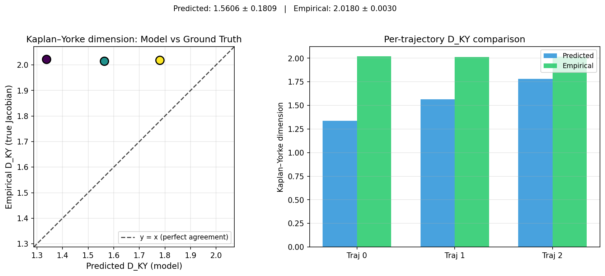
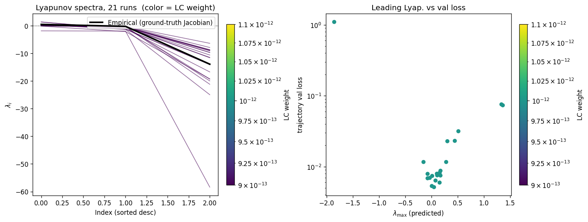
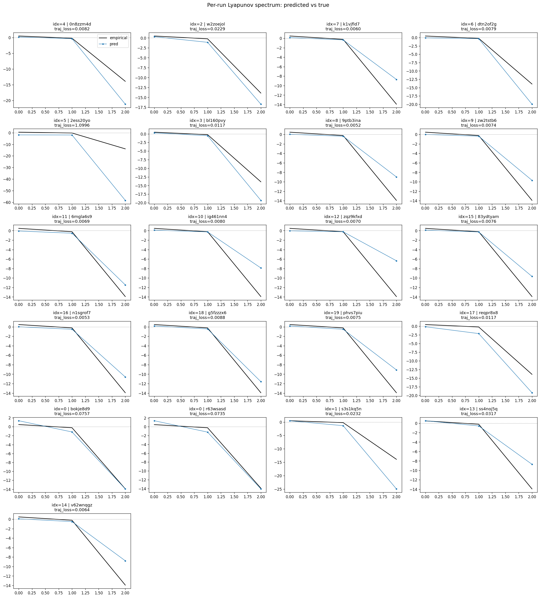
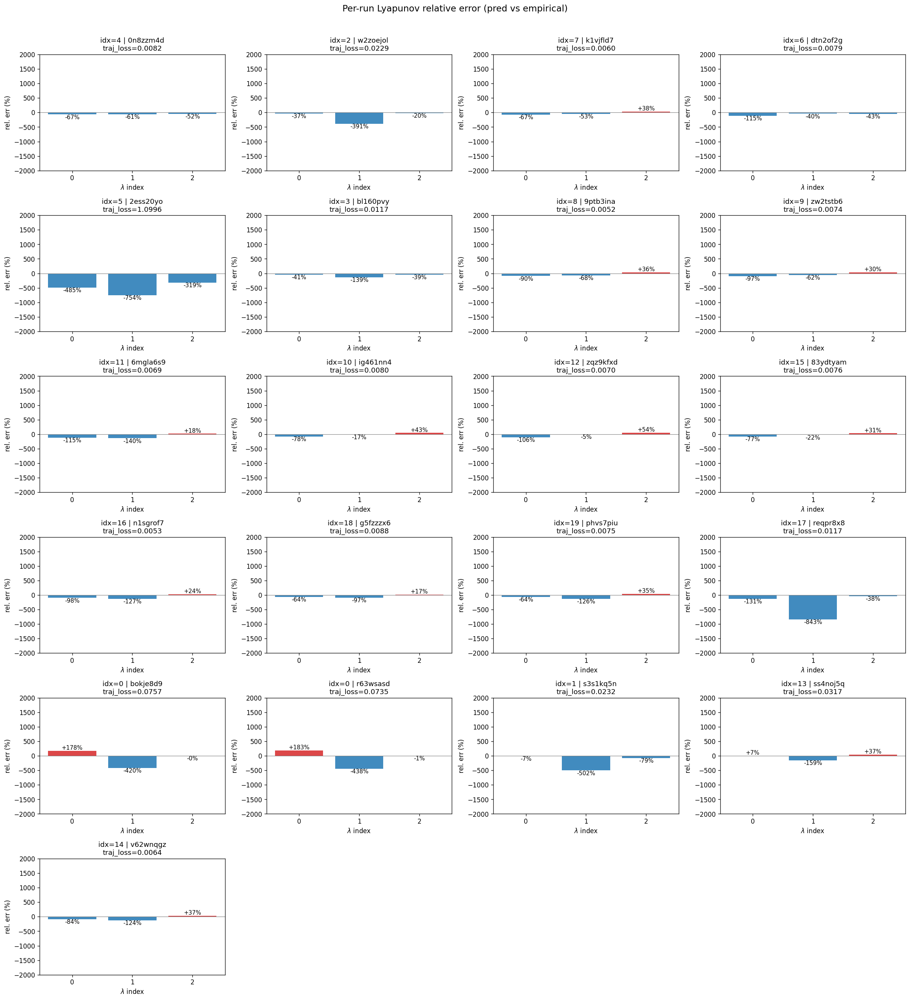
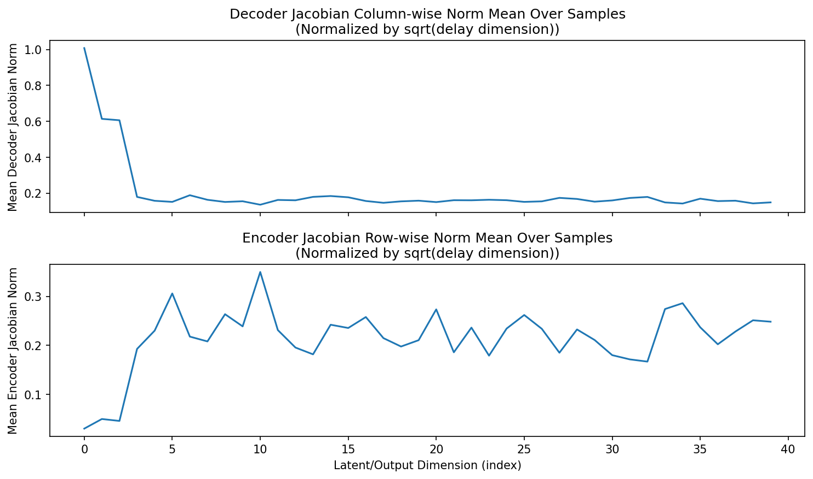
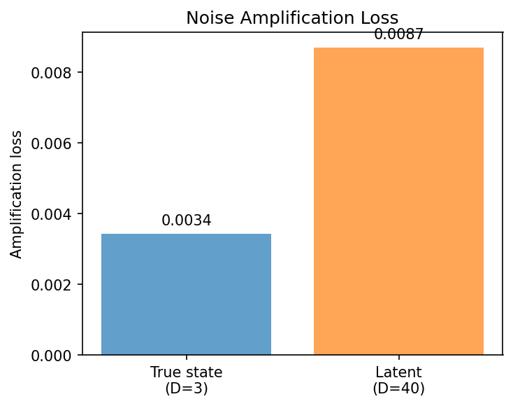
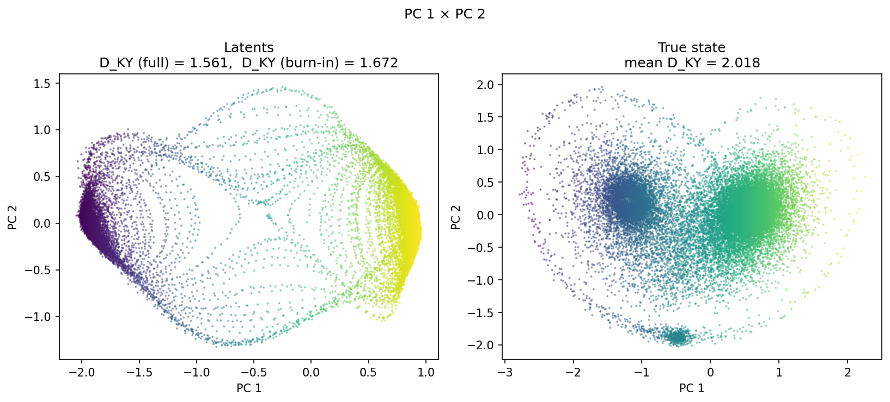
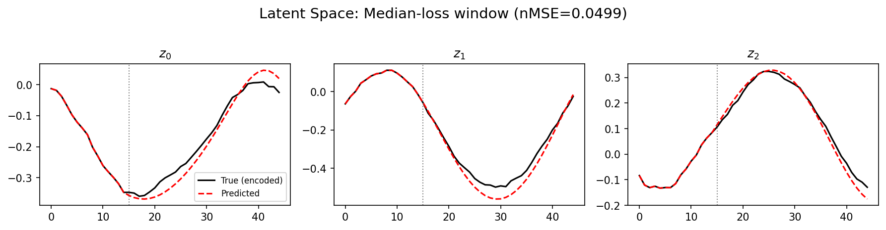
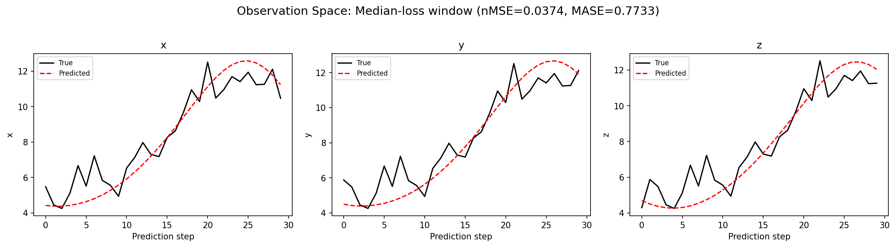
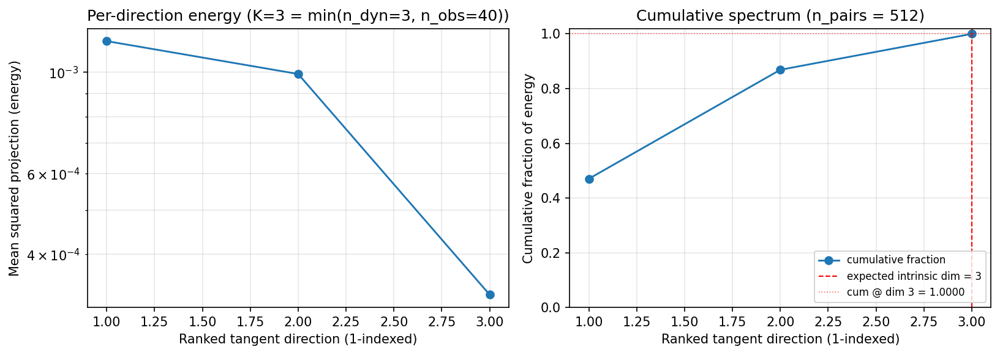
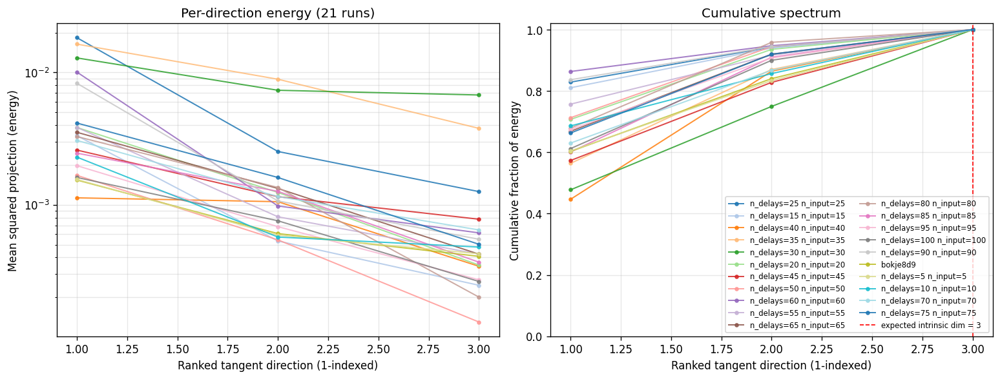
(to be written)
run_analytics stdoutrun_analyticsNo run_id provided — selecting best run from group 'lorenz_partial_additive_mse_uniform_p30_obsnoise005_chain__ndelays_5_100_sweep' ...
Found 21 total runs in JacobianODE/Lorenz_INDpartial_NDsweep_D1_NormTrue__JacobianODE (group=lorenz_partial_additive_mse_uniform_p30_obsnoise005_chain__ndelays_5_100_sweep)
All runs (state, loop_closure_weight, tangent_entropy_weight, kl_dyn_weight):
0n8zzm4d: state=crashed, lc=0.0, te=0.0, kl_dyn=0.0
w2zoejol: state=crashed, lc=0.0, te=0.0, kl_dyn=0.0
k1vjfld7: state=crashed, lc=0.0, te=0.0, kl_dyn=0.0
dtn2of2g: state=crashed, lc=0.0, te=0.0, kl_dyn=0.0
2ess20yo: state=finished, lc=0.0, te=0.0, kl_dyn=0.0
bl160pvy: state=crashed, lc=0.0, te=0.0, kl_dyn=0.0
9ptb3ina: state=finished, lc=0.0, te=0.0, kl_dyn=0.0
zw2tstb6: state=crashed, lc=0.0, te=0.0, kl_dyn=0.0
6mgla6s9: state=crashed, lc=0.0, te=0.0, kl_dyn=0.0
ig461nn4: state=crashed, lc=0.0, te=0.0, kl_dyn=0.0
zqz9kfxd: state=crashed, lc=0.0, te=0.0, kl_dyn=0.0
83ydtyam: state=crashed, lc=0.0, te=0.0, kl_dyn=0.0
n1sgrof7: state=finished, lc=0.0, te=0.0, kl_dyn=0.0
g5fzzzx6: state=crashed, lc=0.0, te=0.0, kl_dyn=0.0
phvs7piu: state=crashed, lc=0.0, te=0.0, kl_dyn=0.0
reqpr8x8: state=crashed, lc=0.0, te=0.0, kl_dyn=0.0
bokje8d9: state=crashed, lc=0.0, te=0.0, kl_dyn=0.0
r63wsasd: state=crashed, lc=0.0, te=0.0, kl_dyn=0.0
s3s1kq5n: state=finished, lc=0.0, te=0.0, kl_dyn=0.0
ss4noj5q: state=finished, lc=0.0, te=0.0, kl_dyn=0.0
v62wnqgz: state=running, lc=0.0, te=0.0, kl_dyn=0.0
slurm_timeout_min not found in any run config — falling back to 180 min
Including 0n8zzm4d (lc=0.0): use_all_runs=True (state=crashed)
Including w2zoejol (lc=0.0): use_all_runs=True (state=crashed)
Including k1vjfld7 (lc=0.0): use_all_runs=True (state=crashed)
Including dtn2of2g (lc=0.0): use_all_runs=True (state=crashed)
Including 2ess20yo (lc=0.0): use_all_runs=True (state=finished)
Including bl160pvy (lc=0.0): use_all_runs=True (state=crashed)
Including 9ptb3ina (lc=0.0): use_all_runs=True (state=finished)
Including zw2tstb6 (lc=0.0): use_all_runs=True (state=crashed)
Including 6mgla6s9 (lc=0.0): use_all_runs=True (state=crashed)
Including ig461nn4 (lc=0.0): use_all_runs=True (state=crashed)
Including zqz9kfxd (lc=0.0): use_all_runs=True (state=crashed)
Including 83ydtyam (lc=0.0): use_all_runs=True (state=crashed)
Including n1sgrof7 (lc=0.0): use_all_runs=True (state=finished)
Including g5fzzzx6 (lc=0.0): use_all_runs=True (state=crashed)
Including phvs7piu (lc=0.0): use_all_runs=True (state=crashed)
Including reqpr8x8 (lc=0.0): use_all_runs=True (state=crashed)
Including bokje8d9 (lc=0.0): use_all_runs=True (state=crashed)
Including r63wsasd (lc=0.0): use_all_runs=True (state=crashed)
Including s3s1kq5n (lc=0.0): use_all_runs=True (state=finished)
Including ss4noj5q (lc=0.0): use_all_runs=True (state=finished)
Including v62wnqgz (lc=0.0): use_all_runs=True (state=running)
Found 21 effectively-done sweep runs:
loop_closure_weight=0.0, tangent_entropy_weight=0.0, kl_dyn_weight=0.0 -> run_id=0n8zzm4d
loop_closure_weight=0.0, tangent_entropy_weight=0.0, kl_dyn_weight=0.0 -> run_id=2ess20yo
loop_closure_weight=0.0, tangent_entropy_weight=0.0, kl_dyn_weight=0.0 -> run_id=6mgla6s9
loop_closure_weight=0.0, tangent_entropy_weight=0.0, kl_dyn_weight=0.0 -> run_id=83ydtyam
loop_closure_weight=0.0, tangent_entropy_weight=0.0, kl_dyn_weight=0.0 -> run_id=9ptb3ina
loop_closure_weight=0.0, tangent_entropy_weight=0.0, kl_dyn_weight=0.0 -> run_id=bl160pvy
loop_closure_weight=0.0, tangent_entropy_weight=0.0, kl_dyn_weight=0.0 -> run_id=bokje8d9
loop_closure_weight=0.0, tangent_entropy_weight=0.0, kl_dyn_weight=0.0 -> run_id=dtn2of2g
loop_closure_weight=0.0, tangent_entropy_weight=0.0, kl_dyn_weight=0.0 -> run_id=g5fzzzx6
loop_closure_weight=0.0, tangent_entropy_weight=0.0, kl_dyn_weight=0.0 -> run_id=ig461nn4
loop_closure_weight=0.0, tangent_entropy_weight=0.0, kl_dyn_weight=0.0 -> run_id=k1vjfld7
loop_closure_weight=0.0, tangent_entropy_weight=0.0, kl_dyn_weight=0.0 -> run_id=n1sgrof7
loop_closure_weight=0.0, tangent_entropy_weight=0.0, kl_dyn_weight=0.0 -> run_id=phvs7piu
loop_closure_weight=0.0, tangent_entropy_weight=0.0, kl_dyn_weight=0.0 -> run_id=r63wsasd
loop_closure_weight=0.0, tangent_entropy_weight=0.0, kl_dyn_weight=0.0 -> run_id=reqpr8x8
loop_closure_weight=0.0, tangent_entropy_weight=0.0, kl_dyn_weight=0.0 -> run_id=s3s1kq5n
loop_closure_weight=0.0, tangent_entropy_weight=0.0, kl_dyn_weight=0.0 -> run_id=ss4noj5q
loop_closure_weight=0.0, tangent_entropy_weight=0.0, kl_dyn_weight=0.0 -> run_id=v62wnqgz
loop_closure_weight=0.0, tangent_entropy_weight=0.0, kl_dyn_weight=0.0 -> run_id=w2zoejol
loop_closure_weight=0.0, tangent_entropy_weight=0.0, kl_dyn_weight=0.0 -> run_id=zqz9kfxd
loop_closure_weight=0.0, tangent_entropy_weight=0.0, kl_dyn_weight=0.0 -> run_id=zw2tstb6
n_dims=25, n_latent=25, n_dyn=3, dt=0.0150
run=0n8zzm4d: DiagnosticMetrics(one_step_mase=0.6574689745903015, loop_closure_loss=4.054520130157471, fast_eigenvalue_fraction=0.0, trajectory_val_loss=0.00808319728821516) (from W&B history)
run=2ess20yo: DiagnosticMetrics(one_step_mase=2.2465319633483887, loop_closure_loss=2.005669355392456, fast_eigenvalue_fraction=0.0416666679084301, trajectory_val_loss=1.0995689630508423) (from W&B history)
run=6mgla6s9: DiagnosticMetrics(one_step_mase=0.8203098177909851, loop_closure_loss=22.41213607788086, fast_eigenvalue_fraction=0.0, trajectory_val_loss=0.006613464560359716) (from W&B history)
run=83ydtyam: DiagnosticMetrics(one_step_mase=0.8970001935958862, loop_closure_loss=43.450016021728516, fast_eigenvalue_fraction=0.0, trajectory_val_loss=0.006696376018226147) (from W&B history)
run=9ptb3ina: DiagnosticMetrics(one_step_mase=0.7079468369483948, loop_closure_loss=3.008054733276367, fast_eigenvalue_fraction=0.0, trajectory_val_loss=0.005126113072037697) (from W&B history)
run=bl160pvy: DiagnosticMetrics(one_step_mase=0.6329125761985779, loop_closure_loss=0.6890865564346313, fast_eigenvalue_fraction=0.0, trajectory_val_loss=0.010930359363555908) (from W&B history)
run=bokje8d9: DiagnosticMetrics(one_step_mase=0.7261512279510498, loop_closure_loss=0.4575902819633484, fast_eigenvalue_fraction=0.0, trajectory_val_loss=0.07571537047624588) (from W&B history)
run=dtn2of2g: DiagnosticMetrics(one_step_mase=0.6942533254623413, loop_closure_loss=16.896045684814453, fast_eigenvalue_fraction=0.0, trajectory_val_loss=0.007397010922431946) (from W&B history)
run=g5fzzzx6: DiagnosticMetrics(one_step_mase=0.9467947483062744, loop_closure_loss=28.040613174438477, fast_eigenvalue_fraction=0.0, trajectory_val_loss=0.006419679615646601) (from W&B history)
run=ig461nn4: DiagnosticMetrics(one_step_mase=0.9808865189552307, loop_closure_loss=3.7034389972686768, fast_eigenvalue_fraction=0.0, trajectory_val_loss=0.006226045545190573) (from W&B history)
run=k1vjfld7: DiagnosticMetrics(one_step_mase=0.6845749020576477, loop_closure_loss=1.5710924863815308, fast_eigenvalue_fraction=0.0, trajectory_val_loss=0.005623101722449064) (from W&B history)
run=n1sgrof7: DiagnosticMetrics(one_step_mase=0.8698402643203735, loop_closure_loss=31.41326904296875, fast_eigenvalue_fraction=0.0, trajectory_val_loss=0.005347886122763157) (from W&B history)
run=phvs7piu: DiagnosticMetrics(one_step_mase=0.9796512126922607, loop_closure_loss=14.805009841918945, fast_eigenvalue_fraction=0.0, trajectory_val_loss=0.0062667070887982845) (from W&B history)
run=r63wsasd: DiagnosticMetrics(one_step_mase=0.7289502024650574, loop_closure_loss=0.4448773264884949, fast_eigenvalue_fraction=0.0, trajectory_val_loss=0.07351799309253693) (from W&B history)
run=reqpr8x8: DiagnosticMetrics(one_step_mase=1.075610876083374, loop_closure_loss=135.78948974609375, fast_eigenvalue_fraction=0.0, trajectory_val_loss=0.010971247218549252) (from W&B history)
run=s3s1kq5n: DiagnosticMetrics(one_step_mase=0.6596358418464661, loop_closure_loss=0.4775063693523407, fast_eigenvalue_fraction=0.0, trajectory_val_loss=0.022967839613556862) (from W&B history)
run=ss4noj5q: DiagnosticMetrics(one_step_mase=1.0664713382720947, loop_closure_loss=37.77985763549805, fast_eigenvalue_fraction=0.0, trajectory_val_loss=0.03165598213672638) (from W&B history)
run=v62wnqgz: DiagnosticMetrics(one_step_mase=0.8508985042572021, loop_closure_loss=50.20488357543945, fast_eigenvalue_fraction=0.0, trajectory_val_loss=0.005598281044512987) (from W&B history)
run=w2zoejol: DiagnosticMetrics(one_step_mase=0.6299511790275574, loop_closure_loss=0.4501948952674866, fast_eigenvalue_fraction=0.0, trajectory_val_loss=0.02172347530722618) (from W&B history)
run=zqz9kfxd: DiagnosticMetrics(one_step_mase=0.8090766072273254, loop_closure_loss=23.533004760742188, fast_eigenvalue_fraction=0.0, trajectory_val_loss=0.00648955162614584) (from W&B history)
run=zw2tstb6: DiagnosticMetrics(one_step_mase=0.7595682144165039, loop_closure_loss=1.6578952074050903, fast_eigenvalue_fraction=0.0, trajectory_val_loss=0.005958148278295994) (from W&B history)
Ranking method: best_traj_loss
Best run ID: k1vjfld7
Best loop_closure_weight: 0.0
Best tangent_entropy_weight: 0.0
Best kl_dyn_weight: 0.0
Best traj loss: 0.005623
Criteria applied: ['C1', 'C2', 'C3']
Surviving: 7 / 21
Auto-selected run_id: k1vjfld7
======================================================================
PARETO FRONTIER RUNS (5 runs)
======================================================================
Run ID LC Loss Traj Val Loss
------------ -------------- --------------
r63wsasd 0.444877 0.073518
w2zoejol 0.450195 0.021723
bl160pvy 0.689087 0.010930
k1vjfld7 1.571092 0.005623 <-- selected
9ptb3ina 3.008055 0.005126
======================================================================
RANKING METHOD COMPARISON (over 7 survivors)
======================================================================
Method Run ID LC Loss Traj Val Loss
---------------------- ------------ -------------- --------------
best_traj_loss k1vjfld7 1.571092 0.005623 <-- active
pareto_knee w2zoejol 0.450195 0.021723
geo_rank k1vjfld7 1.571092 0.005623
minimax_rank w2zoejol 0.450195 0.021723
geo_log_score k1vjfld7 1.571092 0.005623
minimax_log_score bl160pvy 0.689087 0.010930
======================================================================
Loading run k1vjfld7 from JacobianODE/Lorenz_INDpartial_NDsweep_D1_NormTrue__JacobianODE ...
Loading checkpoint epoch=91-step=18400.ckpt...
Train dataset shape: torch.Size([24552, 45, 40])
Validation dataset shape: torch.Size([7812, 45, 40])
Test dataset shape: torch.Size([3348, 45, 40])
Train trajectories dataset shape: torch.Size([22, 1161, 40])
Validation trajectories dataset shape: torch.Size([7, 1161, 40])
Test trajectories dataset shape: torch.Size([3, 1161, 40])
Loading checkpoint epoch=91-step=18400.ckpt...
Computing reconstruction ...
Computing MASE ...
Teacher-forced MASE: 0.6942
Free-running MASE: 0.7497
Computing latent utilization ...
Entropy-based utilization: 0.884
Null subspace mean RMS: 1.043494e-01
Computing Lyapunov exponents ...
Computing full-trajectory Lyapunov (3 test trajs, T=1161) ...
Predicted Lyapunov exponents (batch+burn-in, 128 windowed trajs):
λ_1 = +nan ± nan
λ_2 = +nan ± nan
λ_3 = +nan ± nan
Predicted Lyapunov exponents (full-length, 3 test trajs):
λ_1 = +0.1685 ± 0.0305
λ_2 = -0.3425 ± 0.1828
λ_3 = -8.9733 ± 0.1227
Empirical Lyapunov exponents (mean ± std):
λ_1 = +0.4677 ± 0.0259
λ_2 = -0.2173 ± 0.0549
λ_3 = -13.9174 ± 0.0513
Mean KY dim (predicted): 1.561 ± 0.181
Mean KY dim (empirical): 2.018 ± 0.003
Mean KY dim (burn-in): 1.672 ± 0.502
Computing prediction windows ...
Windows: 114 — nMSE min=0.0224, median=0.0372, mean=0.0425, max=0.1596
Computing long-trajectory free-running rollouts ...
Computing encoder/decoder Jacobians ...
encoder_jacobian: (128, 40, 40)
decoder_jacobian: (128, 40, 40)
Computing amplification loss ...
Amplification loss — True state: 0.003431
Amplification loss — Latent: 0.008702
Computing tangent space spectrum ...